전산응용기계제도기능사 (2016-01-24 기출문제)
1과목: 기계재료 및 요소
1. Cu 와 Pb 합금으로 항공기 및 자동차의 베어링 메탈로 사용되는 것은?
- 양은(nickel silver)
- 켈밋(kelmet)
- 배빗 메탈(babbit metal)
- 애드미럴티 포금(admiralty gun metal)
(정답률: 72%)

2. 다음 중 표면 경화법의 종류가 아닌 것은?
- 침탄법
- 질화법
- 고주파 경화법
- 심냉 처리법
(정답률: 76%)
3. 금속이 탄성한계를 초과한 힘을 받고도 파괴되지 않고 늘어나서 소성변형이 되는 성질은?
- 연성
- 취성
- 경도
- 강도
(정답률: 86%)
4. 주철의 특성에 대한 설명으로 틀린 것은?
- 주조성이 우수하다
- 내마모성이 우수하다.
- 강보다 인성이 크다.
- 인장강도보다 압축강도가 크다.
(정답률: 63%)
5. 접착제, 껌, 전기 절연재료에 이용되는 플라스틱의 종류는?
- 폴리초산비닐계
- 셀룰로오스계
- 아크릴계
- 불소계
(정답률: 73%)
6. 주조용 알루미늄 합금이 아닌 것은?
- Al-Cu계
- Al-Si계
- Al-Zn-Mg계
- Al-Cu-Si계
(정답률: 70%)
7. 주철의 결점인 여리고 약한 인성을 개선하기 위하여 먼저 백주철의 주물을 만들고, 이것을 장시간 열처리하여 탄소의 상태를 분해 또는 소실시켜 인성 또는 연성을 증가시킨 주철은?
- 보통 주철
- 합금 주철
- 고급 주철
- 가단 주철
(정답률: 67%)
8. 인장시험에서 시험편의 절단부 단면적이 14㎟이고, 시험 전 시험편의 초기단면적이 20㎟일 때 단면수축률은?
- 70%
- 80%
- 30%
- 20%
(정답률: 63%)
9. 나사가 축을 중심으로 한 바퀴 회전할 때 축 방향으로 이동한 거리는?
- 피치
- 리드
- 리드각
- 백래쉬
(정답률: 84%)
10. 축의 원주에 많은 키를 깍은 것으로 큰 토크를 전달시킬 수 있고, 내구력이 크며 보스와의 중심축을 정확하게 맞출 수 있는 것은?
- 성크 키
- 반달 키
- 접선 키
- 스플라인
(정답률: 67%)
2과목: 기계가공법 및 안전관리
11. 교차하는 두 축의 운동을 전달하기 위하여 원추형으로 만든 기어는?
- 스퍼 기어
- 헬리컬 기어
- 웜 기어
- 베벨 기어
(정답률: 56%)
12. 다음 중 전동용 기계요소에 해당하는 것은?
- 볼트와 너트
- 리벳
- 체인
- 핀
(정답률: 82%)
13. 롤러 체인에 대한 설명으로 잘못된 것은?
- 롤러 링크와 판 링크를 서로 교대로 하여 연속적으로 연결한 것을 말한다.
- 링크의 수가 짝수이면 간단히 결합되지만, 홀수이면 오프셋 링크를 사용하여 연결한다.
- 조립시에는 체인에 초기장력을 가하여 스프로킷 휠과 조립한다.
- 체인의 링크를 잇는 핀과 핀 사이의 거리를 피치라고 한다.
(정답률: 50%)
14. 나사의 피치와 리드가 같다면 몇 줄 나사에 해당이 되는가?
- 1줄 나사
- 2줄 나사
- 3줄 나사
- 4줄 나사
(정답률: 75%)
15. 압축 코일스프링에서 코일의 평균지름이 50mm, 감김수가 10회, 스프링 지수가 5일 때, 스프링 재료의 지름은 약 몇 mm인가?
- 5
- 10
- 15
- 20
(정답률: 69%)
16. 초경합금의 주요 성분으로 거리가 먼 것은?
- 황
- 니켈
- 코발트
- 텅스텐
(정답률: 59%)
17. 금속선의 전극을 이용하여 NC로 필요한 형상을 가공하는 방법은?
- 전주 가공
- 레이저 가공
- 전자 빔 가공
- 와이어 컷 방전가공
(정답률: 64%)
18. 이동 방진구의 조(Jaw)는 몇 개 인가?
- 5개
- 4개
- 2개
- 1개
(정답률: 53%)
19. 연한 숫돌에 적은 압력으로 가압하면서 가공물에 회전운동과 이송을 주며, 숫돌을 다듬질할 면에 따라 매우 작고 빠른 진동을 주는 가공법은?
- 래핑
- 배럴
- 액체호닝
- 슈퍼 피니싱
(정답률: 73%)
20. 작업대 위에 설치하여 사용하는 소형의 드릴링 머신은?
- 다축 드릴링 머신
- 직립 드릴링 머신
- 탁상 드릴링 머신
- 레이디얼 드릴링 머신
(정답률: 84%)
21. 브로칭 머신의 크기는 어떻게 표시하는가?
- 가공 최대높이
- 브로칭의 최대폭
- 브로칭의 최대길이
- 최대인장력, 최대행정길이
(정답률: 53%)
22. 선반의 이송단위 중에서 1회전당 이송량의 단위?
- mm/s
- mm/rev
- mm/min
- mm/stroke
(정답률: 74%)
23. 밀링 분할법의 종류에 해당되지 않은 것은?
- 단식 분할법
- 미분 분할법
- 직접 분할법
- 차동 분할법
(정답률: 70%)
24. 연삭숫돌의 결합제 표시기호와 그 내용이 틀린 것은?
- B : 비닐
- R : 고무
- S : 실리케이트
- V : 비트리파이드
(정답률: 67%)
25. 지름이 120mm, 길이 340mm 인 탄소강 둥근 막대를 초경 합금 바이트를 사용하여 절삭속도 150m/min으로 절삭하고자 할 때 회전수는 약 rpm 인가?
- 398
- 498
- 598
- 698
(정답률: 47%)
3과목: 기계제도
26. 왼쪽 입체도 형상을 오른쪽과 같이 도시할 때 표제란에 기입해야 할 각법 기호로 옳은 것은?
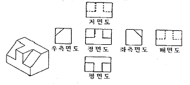
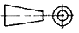
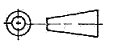
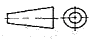
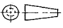
(정답률: 54%)
27. 구멍의 치수가
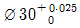
, 축의 치수가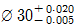
일 때 최대 죔새는 얼마인가?- 0.030
- 0.025
- 0.020
- 0.0⑤
(정답률: 72%)
28. 어떤 물체를 제 3각법으로 다음과 같이 투상했을 때 평면도로 옳은 것은?
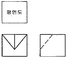
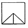
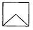
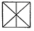
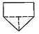
(정답률: 83%)
29. 표면거칠기 지시 기호의 기입 위치가 잘못된 것은?(오류 신고가 접수된 문제입니다. 반드시 정답과 해설을 확인하시기 바랍니다.)
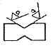
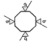
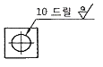
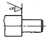
(정답률: 58%)
30. 가공 과정에서 줄무늬가 다음과 같이 나타날 때 표면의 줄무늬 방향 지시기호(*)가 옳은 것은?
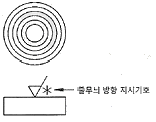
- =
- M
- C
- R
(정답률: 75%)
31. 기계제도에서 사용하는 선에 대한 설명 중 틀린 것은?
- 숨은선, 외형선, 중심선이 한 장소에 겹칠 경우 그 선은 외형선으로 표시한다.
- 지시선은 가는 실선으로 표시한다.
- 무게 중심선은 굵은 1점 쇄선으로 표시한다.
- 대상물의 보이는 부분의 모양을 표시할 때는 굵은 실선으로 사용한다.
(정답률: 64%)
32. 도면 작성 시 가는 2점 쇄선을 사용하는 용도로 틀린 것은?
- 인접한 다른 부품을 참고로 나타낼 때
- 길이가 긴 물체의 생략된 부분의 경계선을 나타낼 때
- 축 제도 시 키 홈 가공에 사용되는 공구의 모양을 나타낼 때
- 가공 전 또는 후의 모양을 나타낼 때
(정답률: 49%)
33. 다음 중 공차의 종류와 기호가 잘못 연결된 것은?
- 진원도 공차 -
- 경사도 공차 -
- 직각도 공차 -
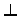
- 대칭도 공차 -
(정답률: 75%)
34. 그림에서 나타난 치수선은 어떤 치수를 나타내는가?
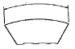
- 변의 길이
- 호의 길이
- 현의 길이
- 각도
(정답률: 81%)
35. 치수의 배치방법 중 개별 치수들을 하나의 열로서 기입하는 방법으로 일반 공차가 차례로 누적되어도 문제없는 경우에 사용하는 치수 배치방법은?
- 직렬 치수 기입법
- 병렬 치수 기입법
- 누진 치수 기입법
- 좌표 치수 기입법
(정답률: 61%)
36. 투상도의 선택방법에 관한 설명으로 옳지 않은 것은?
- 대상물의 모양 및 기능을 가장 명확하게 표시하는 면을 주투상도로 한다.
- 조립도 등 주로 기능을 표시하는 도면에서는 대상물을 사용하는 상태로 투상도를 그린다.
- 특별한 이유가 없는 경우는 대상물을 가로길이로 놓은 상태로 그린다.
- 대상물의 명확한 이해를 위해 주투상도를 보충하는 다른 투상도를 되도록 많이 그린다.
(정답률: 82%)
37. 제도의 목적을 달성하기 위하여 도면이 구비하여야 할 기본 요건이 아닌 것은?
- 면의 표면거칠기, 재료선택, 가공방법 등의 정보
- 도면 작성방법에 있어서 설계자 임의의 창의성
- 무역 및 기술의 국제 교류를 위한 국제적 통용성
- 대상물의 도형, 크기, 모양, 자세, 위치의 정보
(정답률: 86%)
38. 다음 투상도에서 A-A와 같이 단면했을 때 가장 올바르게 나타낸 단면도는?
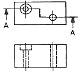
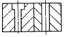
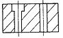
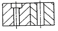
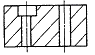
(정답률: 57%)
39. 단면을 나타내는 방법에 대한 설명으로 옳지 않은 것은?
- 단면임을 나타내기 위해 사용하는 해칭선은 동일 부분의 단면인 경우 같은 방식으로 도시되어야 한다.
- 해칭 부위가 넓은 경우 해칭을 할 범위의 외형 부분에 해칭을 제한할 수 있다.
- 경우에 따라 단면 범위를 매우 굵은 실선으로 강조할 수있다.
- 인접하는 얇은 부분의 단면을 나타낼 때는 0.7mm 이상의 간격을 가진 완전한 검은색으로 도시할 수 있다. 단 이 경우 실제 기하학적 형상을 나타내어야 한다.
(정답률: 49%)
40. 다음 중 재료기호와 명칭이 틀린 것은?
- SM 20C : 회주철품
- SF 340A ; 탄소강 단강품
- SPPS 420 : 압력배관용 탄소 강관
- PW-1 ; 피아노 선
(정답률: 58%)
41. 도면의 촬영, 복사 및 도면 접기의 편의를 위한 중심마크의 선 굵기는 몇 mm 인가?
- 0.1mm
- 0.3mm
- 0.7mm
- 1mm
(정답률: 67%)
42. 최대 허용치수가 구멍 50.025mm, 축 49.975mm이며 최소 허용치수가 구멍 50.000mm, 축 49.950mm일 때 끼워 맞춤의 종류는?
- 헐거운 끼워맞춤
- 중간 끼워맞춤
- 억지 끼워맞춤
- 상용 끼워맞춤
(정답률: 74%)
43. 치수선에서는 치수의 끝을 의미하는 기호로 단말 기호와 기점 기호를 사용하는데 다음 중 단말 기호에 속하지 않는 것은?
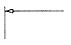
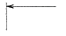
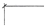
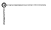
(정답률: 56%)
44. 그림에서 ㉮부와 ㉯부에 두 개의 베어링을 같은 축선에 조립하고자 한다. 이때 ㉮부의 데이텀을 기준으로 ㉯부 기하공차를 적용하고자 때 올바른 기하공차 기호는?
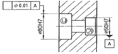
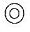
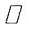
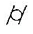
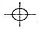
(정답률: 59%)
45. 다음과 같이 제3각법으로 그린 정투상도를 등각투상도로 바르게 표현한 것은?
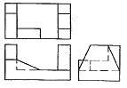
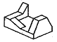
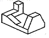
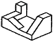
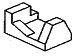
(정답률: 75%)
46. 스프링의 제도에 관한 설명으로 틀린 것은?
- 코일 스프링은 일반적으로 하중이 걸리지 않은 상태로 그린다.
- 코일 스프링에서 특별한 단서가 없으면 오른쪽으로 감은 스프링을 의미한다.
- 코일 스프링에서 양끝을 제외한 동일 모양 부분의 일부를 생략할 때는 생략하는 부분의 선지름의 중심선을 가는 1점 쇄선으로 나타낸다.
- 스프링의 종류와 모양만을 간략도로 나타내는 경우에는 스프링 재료의 중심선만을 가는실선으로 그린다.
(정답률: 54%)
47. 나사 제도에 관한 설명으로 틀린 것은?
- 측면에서 본 그림 및 단면도에서 나사산의 봉우리는 굵은실선으로 골 밑은 가는 실선으로 그린다.
- 나사의 끝면에서 본 그림에서 나사의 골 밑은 가는 실선으로 그린 원주의 3/4에 가까운 원의 일부로 나타낸다.
- 숨겨진 나사를 표시할 때는 나사산의 봉우리는 굵은 파선, 골 밑은 가는 파선으로 그린다.
- 나사부의 길이 경계는 보이는 굵은 실선으로 나타낸다.
(정답률: 49%)
48. 스프로킷 휠의 도시 방법에 대한 설명으로 틀린 것은?
- 축 방향으로 볼 때 바깥지름은 굵은 실선으로 그린다.
- 축 방향으로 볼 때 피치원은 가는 1점 쇄선으로 그린다.
- 축 방향으로 볼 때 이뿌리원은 가는 2점쇄선으로 그린다.
- 축에 직각인 방향에서 본 그림을 단면으로 도시할 때에는 이뿌리의 선은 굵은 실선으로 그린다.
(정답률: 70%)
49. 그림과 같은 용접부의 용접 지시기호로 옳은 것은?
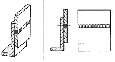
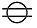
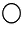
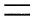
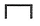
(정답률: 61%)
50. 구름베어링의 호칭이 “6203 ZZ” 베어링의 안지름은 몇 mm 인가?
- 3
- 15
- 17
- 30
(정답률: 77%)
51. 다음은 어떤 밸브에 대한 도시 기호인가?
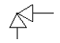
- 글로브 밸브
- 앵글 밸브
- 체크 밸브
- 게이트 밸브
(정답률: 68%)
52. 축의 도시방법에 대한 설명 중 잘못된 것은?
- 모떼기는 길이 치수와 각도로 나타낼 수 있다.
- 축은 주로 길이방향으로 단면도시를 한다.
- 긴 축은 중간을 파단하여 짧게 그릴 수 있다.
- 45° 모따기의 경우 C로 그 의미를 나타낼 수 있다.
(정답률: 68%)
53. 일반적으로 키의 호칭방법에 포함되지 않은 것은?
- 키의 종류
- 길이
- 인장강도
- 호칭 치수
(정답률: 77%)
54. 나사 표시 기호 중 틀린 것은?
- M : 미터 가는 나사
- R : 관용 테이퍼 암나사
- E : 전구 나사
- G : 관용 평행 나사
(정답률: 60%)
55. 스퍼기어 제도 시 축 방향에서 본 그림에서 이골원은 어느선으로 나타내는가?
- 가는 실선
- 가는 파선
- 가는 1점 쇄선
- 가는 2점 쇄선
(정답률: 61%)
56. 모듈이 2, 잇수가 30인 표준 스퍼기어의 이끝원의 지름은 몇 mm인가?
- 56
- 60
- 64
- 68
(정답률: 56%)
57. CAD시스템에서 원점이 아닌 주어진 시작점을 기준으로 하여 그 점과 거리로 좌표를 나타내는 방식은?
- 절대좌표방식
- 상대좌표방식
- 직교좌표방식
- 극좌표방식
(정답률: 76%)
58. CAD 작업시 모델링에 관한 설명 중 틀린 것은?
- 3차원 모델링에는 와이어프레임, 서피스, 솔리드 모델링이 있다.
- 자동적인 체적 계산을 위해서는 솔리드 모델링보다는 서피스 모델링을 사용하는 것이 좋다.
- 솔리드 모델링은 와이어프레임, 서피스 모델링에 비해 높은 데이터 처리 능력이 필요하다.
- 와이어 프레임 모델링의 경우 디스플레이된 방향에 따라 여러 가지 다른 해석이 나올 수 있다.
(정답률: 59%)
59. 다음 중 CAD 시스템의 출력장치가 아닌 것은?
- Plotter
- Printer
- Keyboard
- TFT-LCD
(정답률: 80%)
60. 컴퓨터에서 CPU와 주기억장치 간의 데이터 접근 속도 차이를 극복하기 위해 사용하는 고속의 기억장치는?
- cache memory
- associative memory
- destructive memory
- non-volatile memory
(정답률: 69%)